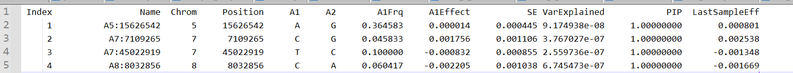

<!DOCTYPE html>


<html lang="zh-CN">


<head>
  <meta name="baidu-site-verification" content="codeva-NSg7ynviLa" />
  <meta charset="utf-8" />
    
  <meta name="viewport" content="width=device-width, initial-scale=1, maximum-scale=1" />
  <title>
    软件学习-GCTB |  
  </title>
  <meta name="generator" content="hexo-theme-ayer">
  
  <link rel="shortcut icon" href="/images/mojie.jpg" />
  
  
<link rel="stylesheet" href="/dist/main.css">

  <link rel="stylesheet" href="https://cdn.jsdelivr.net/gh/Shen-Yu/cdn/css/remixicon.min.css">
  
<link rel="stylesheet" href="/css/custom.css">

  
  <script src="https://cdn.jsdelivr.net/npm/pace-js@1.0.2/pace.min.js"></script>
  
  

  

<link rel="alternate" href="/atom.xml" title="null" type="application/atom+xml">
</head>

</html>

<body>
  <div id="app">
    
      
    <main class="content on">
      <section class="outer">
  <article
  id="post-软件学习-GCTB"
  class="article article-type-post"
  itemscope
  itemprop="blogPost"
  data-scroll-reveal
>
  <div class="article-inner">
    
    <header class="article-header">
       
<h1 class="article-title sea-center" style="border-left:0" itemprop="name">
  软件学习-GCTB
</h1>
 

    </header>
     
    <div class="article-meta">
      <a href="/posts/20a2e4dc/" class="article-date">
  <time datetime="2025-12-29T08:30:27.000Z" itemprop="datePublished">2025-12-29</time>
</a> 
  <div class="article-category">
    <a class="article-category-link" href="/categories/%E6%95%B0%E6%8D%AE%E5%88%86%E6%9E%90/">数据分析</a>
  </div>
  
<div class="word_count">
    <span class="post-time">
        <span class="post-meta-item-icon">
            <i class="ri-quill-pen-line"></i>
            <span class="post-meta-item-text"> 字数统计:</span>
            <span class="post-count">1.7k</span>
        </span>
    </span>

    <span class="post-time">
        &nbsp; | &nbsp;
        <span class="post-meta-item-icon">
            <i class="ri-book-open-line"></i>
            <span class="post-meta-item-text"> 阅读时长≈</span>
            <span class="post-count">9 分钟</span>
        </span>
    </span>
</div>
 
    </div>
      
    <div class="tocbot"></div>


  
    <div class="article-entry" itemprop="articleBody">
       
  <link rel="stylesheet" type="text/css" href="https://cdn.jsdelivr.net/hint.css/2.4.1/hint.min.css"><p>GCTB 是用于分析众多贝叶斯方法的软件。</p>
<span id="more"></span>
<h1>基本参数</h1>
<h2 id="输入输出">输入输出</h2>
<p><strong>–bfile</strong> test</p>
<p>Input PLINK binary PED files, e.g. test.fam, test.bim and test.bed (see PLINK user manual for details).</p>
<p><strong>–pheno</strong> test.phen</p>
<p>Input phenotype data from a plain text file, e.g. test.phen. （前2列是家系号和个体号，第3列是表型列）</p>
<p><strong>–out</strong> test</p>
<p>Specify output root filename.</p>
<h2 id="数据管理">数据管理</h2>
<p><strong>–keep</strong> test.indi.list</p>
<p>Specify a list of individuals to be included in the analysis.</p>
<p><strong>–chr</strong> 1</p>
<p>Include SNPs on a specific chromosome in the analysis, e.g. chromosome 1.</p>
<p><strong>–extract</strong> test.snplist</p>
<p>Specify a list of SNPs to be included in the analysis.</p>
<p><strong>–exclude</strong> test.snplist</p>
<p>Specify a list of SNPs to be excluded from the analysis.</p>
<p><strong>–mpheno</strong> 2</p>
<p>If the phenotype file contains more than one trait, by default, GCTB takes the first trait for analysis (the third column of the file) unless this option is specified. For example, <strong>–mpheno</strong> 2 tells GCTB to take the second trait for analysis (the fourth column of the file).</p>
<p><strong>–covar</strong> test.qcovar</p>
<p>Input quantitative covariates from a plain text file, e.g. test.qcovar. Each quantitative covariate is recognized as a continuous variable.</p>
<p><strong>–random-covar</strong> test.randcovar</p>
<p>Input quantitative covariates from a plain text file which will be fitted as random effects in the model. For a categorical variable with k levels, create a matrix of 0/1 with k columns to indicate the presence of each level in a column.（没有特别理解这个选项）</p>
<h2 id="MCMC选项">MCMC选项</h2>
<p><strong>–seed</strong> 123</p>
<p>Specify the seed for random number generation, e.g. 123. Note that giving the same seed value would result in exactly the same results between two runs.</p>
<p><strong>–chain-length</strong> 21000</p>
<p>Specify the total number of iterations in MCMC, e.g. 21000 (default). （总迭代次数）</p>
<p><strong>–burn-in</strong> 1000</p>
<p>Specify the number of iterations to be discarded, e.g. 1000 (default).</p>
<p><strong>–out-freq</strong> 100</p>
<p>Display the intermediate results for every 100 iterations (default).</p>
<p><strong>–thin</strong> 10</p>
<p>Output the sampled values for SNP effects and genetic architecture parameters for every 10 iterations (default). Only non-zero sampled values of SNP effects are written into a binary file.</p>
<p><strong>–no-mcmc-bin</strong></p>
<p>Suppress the output of MCMC samples of SNP effects. （没有太看懂，貌似是说不输出SNP效应的抽样结果，那就是只输出方差组分的抽样结果）</p>
<h1>贝叶斯方法选项</h1>
<h2 id="选项">选项</h2>
<p><strong>–bayes</strong> S</p>
<p>Specify the Bayesian alphabet for the analysis, e.g. SS. Different alphabet launch different models, which differ in the prior specification for the SNP effects. The available alphabet include</p>
<ul>
<li>B: Each SNP effect is assumed to have an i.i.d. mixture prior of a t-distribution t(0,,ν) with a probability π and a point mass at zero with a probability 1−π. ( 注意：<strong>π 是有效应的SNP比例</strong>，下同)</li>
<li>C: Each SNP effect is assumed to have an i.i.d. mixture prior of a normal distribution N(0,)with a probability π and a point mass at zero with a probability 1−π.</li>
<li>S: Similar to C but the variance of SNP effects is related to minor allele frequency () through a parameter , i.e. .</li>
<li>N: nested BayesC. SNPs within a 0.2 Mb non-overlapping genomic region are collectively considered as a window (specify the distance by <strong>–wind</strong> 0.2). This nested approach speeds up the analysis by skipping over windows with zero effect.</li>
<li>NS: nested BayesS.</li>
<li>R: BayesR. Each SNP effect is assumed to have an i.i.d. mixture prior of multiple normal distributions  with a probability   and a point mass at zero with a probability , where  is a given constant.</li>
</ul>
<p><strong>–fix-pi</strong></p>
<p>An option to fix  to a constant (the value is specified by the option --pi below). The default setting is to treat π as random and estimate it from the data. (将   设定为一个固定值；不然 --pi  只是一个初始值)</p>
<p><strong>–pi</strong> 0.05</p>
<p>A starting value for the sampling of π when it is estimated from the data, or a given value for  when it is fixed. The default value is 0.05. When BayesR is used, it is a string seperated by comma where the number of values defines the number of mixture components and each value defines the starting value for each component (the first value is reserved for the zero component); the default values are 0.95,0.03,0.01,0.01.</p>
<p><strong>–gamma</strong> 0,0.01,0.1,1</p>
<p>When BayesR is used, this speficies the gamma values seperated by comma, each representing the scaling factor for the variance of a mixture component. Note that the number of values should match that in --pi.</p>
<p><strong>–hsq</strong> 0.5</p>
<p>A starting value for the sampling of SNP-based heritability, which may improve the mixing of MCMC algorithm if it starts with a good estimate. The default value is 0.5. (遗传力的初始值)</p>
<p><strong>–S</strong> 0</p>
<p>A starting value for the sampling of the parameter S (relationship between MAF and variance of SNP effects) in BayesS, which may improve the mixing of MCMC algorithm if it starts with a good estimate. The default value is 0.</p>
<p><strong>–wind</strong> 0.2</p>
<p>Specify the window width in Mb for the non-overlapping windows in the nested models, e.g. 0.2 Mb. The default value is 1 Mb.</p>
<p><strong>–var-random</strong> 0.05</p>
<p>Specify the prior knowledge on the proportion of variance explained by the non-SNP random effects. This value will be used to specify the prior distribution for the non-SNP random effect variance variable.</p>
<h2 id="举例">举例</h2>
<p>首先是 BayesA 和 BayesB （先验分布为 <code>Scaled-t density</code>）， BayesA 可以理解为  固定为1 情况下的 BayesB</p>
<figure class="highlight shell"><table><tr><td class="gutter"><pre><span class="line">1</span><br><span class="line">2</span><br><span class="line">3</span><br><span class="line">4</span><br><span class="line">5</span><br><span class="line">6</span><br><span class="line">7</span><br><span class="line">8</span><br><span class="line">9</span><br></pre></td><td class="code"><pre><span class="line"><span class="meta prompt_"># </span><span class="language-bash">BayesB</span></span><br><span class="line">~/software/gctb --bfile DHA_$&#123;j&#125;_SNP --pheno yhat_EPA.txt  --keep ./CV/ID$&#123;i&#125;.txt --bayes B \</span><br><span class="line">--pi 0.05 --fix-pi --hsq 0.164 \</span><br><span class="line">--chain-length 50000 --burn-in 20000 --out ./CV/$&#123;j&#125;/BayesB/DHA_B$&#123;i&#125;</span><br><span class="line"><span class="meta prompt_"></span></span><br><span class="line"><span class="meta prompt_"># </span><span class="language-bash">BayesA</span></span><br><span class="line">~/software/gctb --bfile DHA_$&#123;j&#125;_SNP --pheno yhat_EPA.txt  --keep ./CV/ID$&#123;i&#125;.txt --bayes B \</span><br><span class="line">--pi 1.0 --fix-pi --hsq 0.164 \</span><br><span class="line">--chain-length 50000 --burn-in 20000 --out ./CV/$&#123;j&#125;/BayesA/DHA_A$&#123;i&#125;</span><br></pre></td></tr></table></figure>
<p>然后是 BayesC 和 BayesRR （先验分布为正态分布）， BayesRR 可以理解为  固定为1 情况下的 BayesC</p>
<figure class="highlight plaintext"><table><tr><td class="gutter"><pre><span class="line">1</span><br><span class="line">2</span><br><span class="line">3</span><br><span class="line">4</span><br><span class="line">5</span><br><span class="line">6</span><br><span class="line">7</span><br><span class="line">8</span><br><span class="line">9</span><br></pre></td><td class="code"><pre><span class="line"># BayesC</span><br><span class="line">~/software/gctb --bfile DHA_$&#123;j&#125;_SNP --pheno yhat_EPA.txt  --keep ./CV/ID$&#123;i&#125;.txt --bayes C \</span><br><span class="line">--pi 0.05 --hsq 0.164 \</span><br><span class="line">--chain-length 50000 --burn-in 20000 --out ./CV/$&#123;j&#125;/BayesC/DHA_C$&#123;i&#125;</span><br><span class="line"></span><br><span class="line"># BayesRR</span><br><span class="line">gctb --bfile ./G2/DHA_$&#123;j&#125;_SNP --pheno yhat_DHA.txt  --keep ./CV/ID$&#123;i&#125;.txt --bayes C \</span><br><span class="line">--pi 1.0 --fix-pi  --hsq 0.752 \</span><br><span class="line">--chain-length 50000 --burn-in 20000 --out ./CV/$&#123;j&#125;/BayesRR/DHA_RR$&#123;i&#125; &gt;/dev/null</span><br></pre></td></tr></table></figure>
<p>然后是 BayesS</p>
<figure class="highlight plaintext"><table><tr><td class="gutter"><pre><span class="line">1</span><br><span class="line">2</span><br><span class="line">3</span><br><span class="line">4</span><br></pre></td><td class="code"><pre><span class="line"># BayesS</span><br><span class="line">~/software/gctb --bfile DHA_$&#123;j&#125;_SNP --pheno yhat_EPA.txt  --keep ./CV/ID$&#123;i&#125;.txt --bayes S \</span><br><span class="line">--pi 0.05 --hsq 0.164 \</span><br><span class="line">--chain-length 50000 --burn-in 20000 --out ./CV/$&#123;j&#125;/BayesS/DHA_S$&#123;i&#125;\</span><br></pre></td></tr></table></figure>
<p>然后是 BayesR (没有看懂，大概是说把SNP分为四类，零效应、小、中、大方差)</p>
<figure class="highlight plaintext"><table><tr><td class="gutter"><pre><span class="line">1</span><br><span class="line">2</span><br><span class="line">3</span><br><span class="line">4</span><br></pre></td><td class="code"><pre><span class="line"># BayesR</span><br><span class="line">~/software/gctb --bfile DHA_$&#123;j&#125;_SNP --pheno yhat_EPA.txt  --keep ./CV/ID$&#123;i&#125;.txt --bayes R \</span><br><span class="line">--pi  0.95,0.03,0.01,0.01 --gamma 0,0.01,0.1,1 --hsq 0.164 \</span><br><span class="line">--chain-length 50000 --burn-in 20000 --out ./CV/$&#123;j&#125;/BayesR/DHA_R$&#123;i&#125;</span><br></pre></td></tr></table></figure>
<h2 id="输出文件">输出文件</h2>
<p>我这只有下面前4个输出文件</p>
<p><strong>test.log</strong>: a text file of running status, intermediate output and final results;</p>
<p><strong>test.snpRes</strong>: a text file of posterior statistics of SNP effects;</p>
<p><strong>test.covRes</strong>: a text file of posterior statistics of covariates;</p>
<p><strong>test.parRes</strong>: a text file of posterior statistics of key model parameters;</p>
<p><strong>test.mcmcsamples.CovEffects</strong>: a text file of MCMC samples for the covariates fitted in the model;</p>
<p><strong>test.mcmcsamples.SnpEffects</strong>: a binary file of MCMC samples for the SNP effects;</p>
<p><strong>test.mcmcsamples.Par</strong>: a text file of MCMC samples for the key model parameters;</p>
<p>这里重点结果文件就是 <strong>test.snpRes</strong> ，重点在于第2列（Name, 即SNP名称），第5列（A1），第8列（A1Effect,  SNP的效应大小）。</p>
<p></p>
<p>然后用碱基计数（0，1，2；必须是A1碱基的计数） 乘以SNP效应值，然后累积，得到个体的GEBV。</p>
<h2 id="贝叶斯方法参考文献">贝叶斯方法参考文献</h2>
<p><strong>GCTB software and BayesS method</strong><br>
Zeng et al. (2018) Signatures of negative selection in the genetic architecture of human complex traits. <a target="_blank" rel="noopener" href="https://www.nature.com/articles/s41588-018-0101-4"><em>Nature Genetics</em>, doi: 10.1038/s41588-018-0101-4.</a></p>
<p><strong>BayesR</strong><br>
Moser et al. (2015) Simultaneous discovery, estimation and prediction analysis of complex traits using a Bayesian mixture model. <a target="_blank" rel="noopener" href="http://journals.plos.org/plosgenetics/article?id=10.1371/journal.pgen.1004969"><em>PLoS Genetics</em>, 11: e1004969.</a></p>
<p><strong>BayesN</strong><br>
Zeng et al. (2018) A nested mixture model for genomic prediction using whole-genome SNP genotypes. <a target="_blank" rel="noopener" href="http://journals.plos.org/plosone/article?id=10.1371/journal.pone.0194683"><em>PLoS One</em>, 13: e0194683.</a></p>
<p><strong>BayesCπ</strong><br>
Habier et al. (2011) Extension of the Bayesian alphabet for genomic selection. <a target="_blank" rel="noopener" href="https://bmcbioinformatics.biomedcentral.com/articles/10.1186/1471-2105-12-186"><em>BMC Bioinformatics</em>, 12: 186.</a></p>
<p><strong>BayesB</strong><br>
Meuwissen et al. (2001) Prediction of total genetic value using genome-wide dense marker maps. <a target="_blank" rel="noopener" href="http://www.genetics.org/content/157/4/1819.short"><em>Genetics</em>, 157: 1819-1829.</a></p>
<h1>参考文献</h1>
<ol>
<li><a target="_blank" rel="noopener" href="https://cnsgenomics.com/software/gctb/#Overview">https://cnsgenomics.com/software/gctb/#Overview</a></li>
</ol>
 
      <!-- reward -->
      
    </div>
    

    <!-- copyright -->
    
    <div class="declare">
      <ul class="post-copyright">
        <li>
          <i class="ri-copyright-line"></i>
          <strong>版权声明： </strong>
          
          本博客所有文章除特别声明外，著作权归作者所有。转载请注明出处！
          
        </li>
      </ul>
    </div>
    
    <footer class="article-footer">
       
  <ul class="article-tag-list" itemprop="keywords"><li class="article-tag-list-item"><a class="article-tag-list-link" href="/tags/%E6%95%B0%E6%8D%AE%E5%88%86%E6%9E%90/" rel="tag">数据分析</a></li></ul>

    </footer>
  </div>

   
  <nav class="article-nav">
    
      <a href="/posts/33cf95d2/" class="article-nav-link">
        <strong class="article-nav-caption">上一篇</strong>
        <div class="article-nav-title">
          
            使用blupf90运行阈值模型
          
        </div>
      </a>
    
    
      <a href="/posts/a73c5bf4/" class="article-nav-link">
        <strong class="article-nav-caption">下一篇</strong>
        <div class="article-nav-title">使用vcftools计算FST</div>
      </a>
    
  </nav>

   
<!-- valine评论 -->
<div id="vcomments-box">
  <div id="vcomments"></div>
</div>
<script src="//cdn1.lncld.net/static/js/3.0.4/av-min.js"></script>
<script src="https://cdn.jsdelivr.net/npm/valine@1.4.14/dist/Valine.min.js"></script>
<script>
  new Valine({
    el: "#vcomments",
    app_id: "yHN3kf7fHt5wvleM2DVoHLdY-gzGzoHsz",
    app_key: "RPIwmdftljIzOtAULwc7JCAp",
    path: window.location.pathname,
    avatar: "monsterid",
    placeholder: "靓仔，看完留个评论再走哇！\n只需要填入昵称和邮箱就可以了",
    recordIP: true,
  });
  const infoEle = document.querySelector("#vcomments .info");
  if (infoEle && infoEle.childNodes && infoEle.childNodes.length > 0) {
    infoEle.childNodes.forEach(function (item) {
      item.parentNode.removeChild(item);
    });
  }
</script>
<style>
  #vcomments-box {
    padding: 5px 30px;
  }

  @media screen and (max-width: 800px) {
    #vcomments-box {
      padding: 5px 0px;
    }
  }

  #vcomments-box #vcomments {
    background-color: #fff;
  }

  .v .vlist .vcard .vh {
    padding-right: 20px;
  }

  .v .vlist .vcard {
    padding-left: 10px;
  }
</style>

 
   
     
</article>

</section>
      <footer class="footer">
  <div class="outer">
    <ul>
      <li>
        Copyrights &copy;
        2019-2026
        <i class="ri-heart-fill heart_icon"></i> Vincere Zhou
      </li>
    </ul>
    <ul>
      <li>
        
        
        <span>
  <span><i class="ri-user-3-fill"></i>访问人数:<span id="busuanzi_value_site_uv"></span></s>
  <span class="division">|</span>
  <span><i class="ri-eye-fill"></i>浏览次数:<span id="busuanzi_value_page_pv"></span></span>
</span>
        
      </li>
    </ul>
    <ul>
      
    </ul>
    <ul>
      
    </ul>
    <ul>
      <li>
        <!-- cnzz统计 -->
        
      </li>
    </ul>

    <!-- 与只只在一起天数 -->
	<ul>
		<li><span id="lovetime_span"></span></li>
	</ul>
    <script type="text/javascript">			
        function show_runtime() {
            window.setTimeout("show_runtime()", 1000);
            X = new Date("03/04/2021 22:11:00");
            Y = new Date();
            T = (Y.getTime() - X.getTime());
            M = 24 * 60 * 60 * 1000;
            a = T / M;
            A = Math.floor(a);
            b = (a - A) * 24;
            B = Math.floor(b);
            c = (b - B) * 60;
            C = Math.floor((b - B) * 60);
            D = Math.floor((c - C) * 60);
            lovetime_span.innerHTML = "只只和男朋友在一起了 " + A + "天" + B + "小时" + C + "分" + D + "秒"
        }
        show_runtime();
    </script>

  </div>
</footer>
      <div class="float_btns">
        <div class="totop" id="totop">
  <i class="ri-arrow-up-line"></i>
</div>

      </div>
    </main>
    <aside class="sidebar on">
      <button class="navbar-toggle"></button>
<nav class="navbar">
  
  <div class="logo">
    <a href="/"></a>
  </div>
  
  <ul class="nav nav-main">
    
    <li class="nav-item">
      <a class="nav-item-link" href="/">主页</a>
    </li>
    
    <li class="nav-item">
      <a class="nav-item-link" href="/archives">归档</a>
    </li>
    
    <li class="nav-item">
      <a class="nav-item-link" href="/categories">分类</a>
    </li>
    
    <li class="nav-item">
      <a class="nav-item-link" href="/tags">标签</a>
    </li>
    
    <li class="nav-item">
      <a class="nav-item-link" href="/friends">友链</a>
    </li>
    
    <li class="nav-item">
      <a class="nav-item-link" href="/about">关于</a>
    </li>
    
  </ul>
</nav>
<nav class="navbar navbar-bottom">
  <ul class="nav">
    <li class="nav-item">
      
      <a class="nav-item-link nav-item-search"  title="搜索">
        <i class="ri-search-line"></i>
      </a>
      
      
      <a class="nav-item-link" target="_blank" href="/atom.xml" title="RSS Feed">
        <i class="ri-rss-line"></i>
      </a>
      
    </li>
  </ul>
</nav>
<div class="search-form-wrap">
  <div class="local-search local-search-plugin">
  <input type="search" id="local-search-input" class="local-search-input" placeholder="Search...">
  <div id="local-search-result" class="local-search-result"></div>
</div>
</div>
    </aside>
    <script>
      if (window.matchMedia("(max-width: 768px)").matches) {
        document.querySelector('.content').classList.remove('on');
        document.querySelector('.sidebar').classList.remove('on');
      }
    </script>
    <div id="mask"></div>

<!-- #reward -->
<div id="reward">
  <span class="close"><i class="ri-close-line"></i></span>
  <p class="reward-p"><i class="ri-cup-line"></i>请我喝杯茶吧~</p>
  <div class="reward-box">
    
    <div class="reward-item">
      
      <span class="reward-type">支付宝</span>
    </div>
    
    
    <div class="reward-item">
      
      <span class="reward-type">微信</span>
    </div>
    
  </div>
</div>
    
<script src="/js/jquery-2.0.3.min.js"></script>


<script src="/js/lazyload.min.js"></script>

<!-- Tocbot -->


<script src="/js/tocbot.min.js"></script>

<script>
  tocbot.init({
    tocSelector: '.tocbot',
    contentSelector: '.article-entry',
    headingSelector: 'h1, h2, h3, h4, h5, h6',
    hasInnerContainers: true,
    scrollSmooth: true,
    scrollContainer: 'main',
    positionFixedSelector: '.tocbot',
    positionFixedClass: 'is-position-fixed',
    fixedSidebarOffset: 'auto'
  });
</script>

<script src="https://cdn.jsdelivr.net/npm/jquery-modal@0.9.2/jquery.modal.min.js"></script>
<link rel="stylesheet" href="https://cdn.jsdelivr.net/npm/jquery-modal@0.9.2/jquery.modal.min.css">
<script src="https://cdn.jsdelivr.net/npm/justifiedGallery@3.7.0/dist/js/jquery.justifiedGallery.min.js"></script>

<script src="/dist/main.js"></script>

<!-- ImageViewer -->

<!-- Root element of PhotoSwipe. Must have class pswp. -->
<div class="pswp" tabindex="-1" role="dialog" aria-hidden="true">

    <!-- Background of PhotoSwipe. 
         It's a separate element as animating opacity is faster than rgba(). -->
    <div class="pswp__bg"></div>

    <!-- Slides wrapper with overflow:hidden. -->
    <div class="pswp__scroll-wrap">

        <!-- Container that holds slides. 
            PhotoSwipe keeps only 3 of them in the DOM to save memory.
            Don't modify these 3 pswp__item elements, data is added later on. -->
        <div class="pswp__container">
            <div class="pswp__item"></div>
            <div class="pswp__item"></div>
            <div class="pswp__item"></div>
        </div>

        <!-- Default (PhotoSwipeUI_Default) interface on top of sliding area. Can be changed. -->
        <div class="pswp__ui pswp__ui--hidden">

            <div class="pswp__top-bar">

                <!--  Controls are self-explanatory. Order can be changed. -->

                <div class="pswp__counter"></div>

                <button class="pswp__button pswp__button--close" title="Close (Esc)"></button>

                <button class="pswp__button pswp__button--share" style="display:none" title="Share"></button>

                <button class="pswp__button pswp__button--fs" title="Toggle fullscreen"></button>

                <button class="pswp__button pswp__button--zoom" title="Zoom in/out"></button>

                <!-- Preloader demo http://codepen.io/dimsemenov/pen/yyBWoR -->
                <!-- element will get class pswp__preloader--active when preloader is running -->
                <div class="pswp__preloader">
                    <div class="pswp__preloader__icn">
                        <div class="pswp__preloader__cut">
                            <div class="pswp__preloader__donut"></div>
                        </div>
                    </div>
                </div>
            </div>

            <div class="pswp__share-modal pswp__share-modal--hidden pswp__single-tap">
                <div class="pswp__share-tooltip"></div>
            </div>

            <button class="pswp__button pswp__button--arrow--left" title="Previous (arrow left)">
            </button>

            <button class="pswp__button pswp__button--arrow--right" title="Next (arrow right)">
            </button>

            <div class="pswp__caption">
                <div class="pswp__caption__center"></div>
            </div>

        </div>

    </div>

</div>

<link rel="stylesheet" href="https://cdn.jsdelivr.net/npm/photoswipe@4.1.3/dist/photoswipe.min.css">
<link rel="stylesheet" href="https://cdn.jsdelivr.net/npm/photoswipe@4.1.3/dist/default-skin/default-skin.min.css">
<script src="https://cdn.jsdelivr.net/npm/photoswipe@4.1.3/dist/photoswipe.min.js"></script>
<script src="https://cdn.jsdelivr.net/npm/photoswipe@4.1.3/dist/photoswipe-ui-default.min.js"></script>

<script>
    function viewer_init() {
        let pswpElement = document.querySelectorAll('.pswp')[0];
        let $imgArr = document.querySelectorAll(('.article-entry img:not(.reward-img)'))

        $imgArr.forEach(($em, i) => {
            $em.onclick = () => {
                // slider展开状态
                // todo: 这样不好，后面改成状态
                if (document.querySelector('.left-col.show')) return
                let items = []
                $imgArr.forEach(($em2, i2) => {
                    let img = $em2.getAttribute('data-idx', i2)
                    let src = $em2.getAttribute('data-target') || $em2.getAttribute('src')
                    let title = $em2.getAttribute('alt')
                    // 获得原图尺寸
                    const image = new Image()
                    image.src = src
                    items.push({
                        src: src,
                        w: image.width || $em2.width,
                        h: image.height || $em2.height,
                        title: title
                    })
                })
                var gallery = new PhotoSwipe(pswpElement, PhotoSwipeUI_Default, items, {
                    index: parseInt(i)
                });
                gallery.init()
            }
        })
    }
    viewer_init()
</script>

<!-- MathJax -->

<script type="text/x-mathjax-config">
  MathJax.Hub.Config({
      tex2jax: {
          inlineMath: [ ['$','$'], ["\\(","\\)"]  ],
          processEscapes: true,
          skipTags: ['script', 'noscript', 'style', 'textarea', 'pre', 'code']
      }
  });

  MathJax.Hub.Queue(function() {
      var all = MathJax.Hub.getAllJax(), i;
      for(i=0; i < all.length; i += 1) {
          all[i].SourceElement().parentNode.className += ' has-jax';
      }
  });
</script>

<script src="https://cdn.jsdelivr.net/npm/mathjax@2.7.6/unpacked/MathJax.js?config=TeX-AMS-MML_HTMLorMML"></script>
<script>
  var ayerConfig = {
    mathjax: true
  }
</script>

<!-- Katex -->

<!-- busuanzi  -->


<script src="/js/busuanzi-2.3.pure.min.js"></script>


<!-- ClickLove -->

<!-- ClickBoom1 -->

<!-- ClickBoom2 -->

<!-- CodeCopy -->


<link rel="stylesheet" href="/css/clipboard.css">

<script src="https://cdn.jsdelivr.net/npm/clipboard@2/dist/clipboard.min.js"></script>
<script>
  function wait(callback, seconds) {
    var timelag = null;
    timelag = window.setTimeout(callback, seconds);
  }
  !function (e, t, a) {
    var initCopyCode = function(){
      var copyHtml = '';
      copyHtml += '<button class="btn-copy" data-clipboard-snippet="">';
      copyHtml += '<i class="ri-file-copy-2-line"></i><span>COPY</span>';
      copyHtml += '</button>';
      $(".highlight .code pre").before(copyHtml);
      $(".article pre code").before(copyHtml);
      var clipboard = new ClipboardJS('.btn-copy', {
        target: function(trigger) {
          return trigger.nextElementSibling;
        }
      });
      clipboard.on('success', function(e) {
        let $btn = $(e.trigger);
        $btn.addClass('copied');
        let $icon = $($btn.find('i'));
        $icon.removeClass('ri-file-copy-2-line');
        $icon.addClass('ri-checkbox-circle-line');
        let $span = $($btn.find('span'));
        $span[0].innerText = 'COPIED';
        
        wait(function () { // 等待两秒钟后恢复
          $icon.removeClass('ri-checkbox-circle-line');
          $icon.addClass('ri-file-copy-2-line');
          $span[0].innerText = 'COPY';
        }, 2000);
      });
      clipboard.on('error', function(e) {
        e.clearSelection();
        let $btn = $(e.trigger);
        $btn.addClass('copy-failed');
        let $icon = $($btn.find('i'));
        $icon.removeClass('ri-file-copy-2-line');
        $icon.addClass('ri-time-line');
        let $span = $($btn.find('span'));
        $span[0].innerText = 'COPY FAILED';
        
        wait(function () { // 等待两秒钟后恢复
          $icon.removeClass('ri-time-line');
          $icon.addClass('ri-file-copy-2-line');
          $span[0].innerText = 'COPY';
        }, 2000);
      });
    }
    initCopyCode();
  }(window, document);
</script>


<!-- CanvasBackground -->


    
  </div>
<script src="/live2dw/lib/L2Dwidget.min.js?094cbace49a39548bed64abff5988b05"></script><script>L2Dwidget.init({"pluginRootPath":"live2dw/","pluginJsPath":"lib/","pluginModelPath":"assets/","tagMode":false,"debug":false,"model":{"jsonPath":"/live2dw/assets/wanko.model.json"},"display":{"position":"left","width":150,"height":300,"hOffset":80,"vOffset":-70},"mobile":{"show":false,"scale":0.5},"log":false});</script></body>

</html>